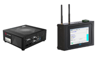
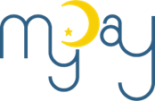
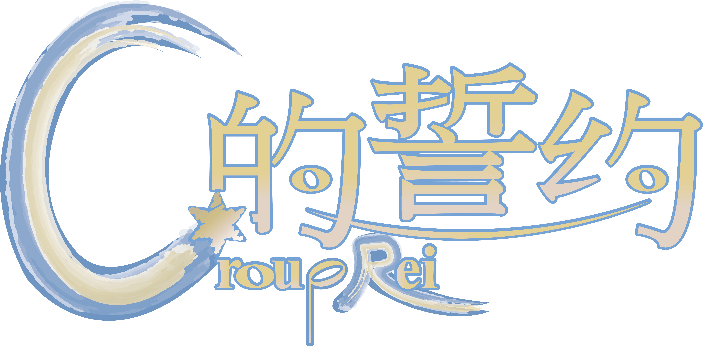

商業智慧研究中心
助理工程師
參與 Flutter、Java Spring 與網頁系統開發。
SOFTWARE ENGINEER · TAIWAN
CHANG, EN-YU
以軟體開發與 AI 技術，改善工作流程並將想法落實到實際場域。

01 / CAREER
一路從跨平台應用、企業系統開發，走到 AI 與自動化專案。
助理工程師
參與 Flutter、Java Spring 與網頁系統開發。
投入 Edge AI 專案，完成裝置端程式與操作網頁，取得 Pre-offer。
參與 AI Agent、Edge AI、自動化程式與內部系統開發維護。
02 / FOCUS
從流程需求出發，涵蓋資料取得、AI 應用與系統整合。
開發 AI Agent 與 AI 郵件處理系統，協助減少人工處理工作。
將 AI 模型導入設備與產線流程，支援生產預測並降低耗材損失。
開發 ETL、伺服器監控與更新程式，並維護各類內部系統。

03 / EDGE AI
將資料收集裝置延伸為 AIoT 應用，讓機台資料能支援生產預測。
04 / APPLIED AI
依照不同使用情境，開發、導入並維護能落地的工具。
以 AI 協助處理公司內部郵件工作，降低人工處理時間。
開發資料擷取、轉換與載入流程，支援內部系統需求。
製作伺服器監控、更新程式，並持續維護內部系統。
05 / SELECTED PROJECTS
在團隊專案中負責開發，也參與規劃與協作。

跨平台學生行事曆。擔任組長，負責首頁、行程、後端功能與 AWS 架設；獲專題競賽第二名。

結合音樂與 ARPG 的遊戲專題。擔任組長，負責後端、資料庫與遊戲企劃，並通過國科會大專學生研究計畫。
06 / TOOLKIT
依專案需求選擇技術，從介面、服務到資料與部署皆有實作經驗。
GitHub Copilot SDK
Langflow
Edge AI
HTML、CSS、JavaScript
React
Flutter、Android
Java、Spring Boot
Python、Django、Flask
Node.js
MySQL、MongoDB、SQLite
AWS、Azure、Google Cloud
Linux、Docker
AI-900 · TOEIC 530
MTA Python、Java、Security、Networking